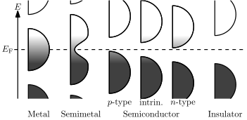
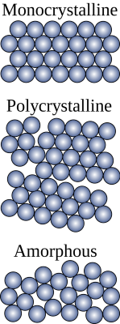
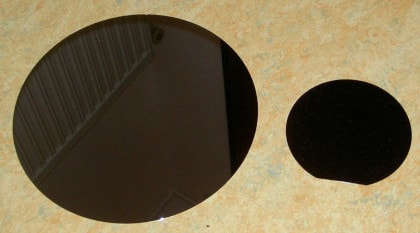

I recently finished the book CODE - a book on how to build a computer from scratch. The book was awesome and I wanted to learn more about how a physical computer was built.
Disclaimer: These are personal learning notes meant to build intuition, not a fabrication recipe.
This write-up walks through how a transistor works and how it is fabricated, based on the study notes I put together while learning.
Silicon is a semiconductor, which means it can act like a conductor or an insulator depending on how we treat it. That tunability lets us control how easily electrons leave their atoms or how eagerly nearby atoms accept them.
The energy difference between “it wants to hold the electron” and “it happily lets it go” is the band gap. Metals have almost no gap, so electrons flow easily. Insulators have a large gap and strongly resist current. Semiconductors land in the middle, which is perfect for building switches.
The diagram below shows where silicon sits on that spectrum.
https://upload.wikimedia.org/wikipedia/commons/thumb/9/9d/Band_filling_diagram.svg
You can shift the band gap in useful ways by doping silicon—mixing in a tiny amount of other atoms.
Silicon doping diagram: https://commons.wikimedia.org/wiki/File:Silicon_doping_-_Type_P_and_N.svg
Now place a block of p-type silicon against a block of n-type silicon. Where they meet, electrons drift from the n-side toward the p-side because the n-side holds them more loosely. As those electrons move, the region near the junction on the n-side becomes positively charged, while the p-side gains extra electrons and becomes negatively charged.
This charge separation creates an electric field across the junction. The field pushes back on any additional carriers that try to diffuse, so the movement of electrons settles into an equilibrium at a certain distance.
Because the field is produced by displaced charge, you can also view it as a built-in electrical potential (voltage) inside the material.
What happens if we try to put electricity through the junction?
First, focus on voltage. When you put a positive voltage on the p-type side (forward bias) it pulls electrons back toward the junction and pushes holes in the opposite direction. The depletion region becomes thinner, the built-in potential drops, and current can flow.
Flip the polarity so the p-type side is negative (reverse bias) and the electric field grows. The depletion region widens, the potential barrier increases, and charge carriers have a much harder time crossing.
Try out the slider below: positive values mimic forward bias and you will see the depletion region shrink, while negative values widen it. That one-way behaviour is exactly what makes a diode.
Forward bias (0.0 V)
Approx. depletion width: 0 nm
When you try to push electrons the “wrong” way, the junction’s electric field pushes back with an equal and opposite potential.
Okay, now the MOSFET part.
Place two heavily doped n-type regions inside the p-type silicon. Without any extra help the depletion regions between them block current, so the structure still acts like two back-to-back diodes.
Bias: 0.0 V — both junctions blocking
Next add a metal gate above the surface, separated by a very thin insulating oxide. The field from the gate can influence the silicon, but the oxide stops electrons from freely moving between them. That stack is what gives the MOSFET (Metal-Oxide-Semiconductor Field-Effect Transistor) its name.
Drive the gate positive relative to the p-type body and the electric field pulls electrons toward the surface. When enough carriers pile up they form a thin inversion layer that behaves like an n-type channel linking the two n+ regions. Remove the voltage and the field collapses, the channel disappears, and the device switches off again.
Tie it all together by biasing the drain slightly positive and raising the gate above threshold. The pinch-off point slides toward the drain, the channel settles into saturation, and the device now behaves like a current-controlled current source—a full MOSFET ready to slot into a logic gate or amplifier.
The slider below lets you vary the gate voltage and watch the channel appear.
Gate: 0.0 V — channel off
When the channel is present, electrons travel along the surface instead of fighting the junction. Drop the gate voltage and the depletion region expands again, cutting the path so only leakage trickles through. That simple field-controlled switch is the heart of modern digital logic.
With the device physics in place, the next step is turning raw material into the silicon that holds those junctions. The stages below sketch how sand becomes a patterned MOSFET.
The starting material is quartz rock, a naturally occurring form of silicon dioxide.
Silicon makes up roughly 28% of the Earth’s crust by mass—the second most abundant element after oxygen. In practice fabs favour quartzite, a very pure sandstone that has been baked and compressed until most of the impurities are driven out.
Quartzite begins life as ordinary sand. Over geological time the layers are buried, heated, and welded into a dense rock with fewer contaminants, which makes the later purification steps a lot easier.

The next step is to strip away the oxygen in silicon dioxide. That happens in an electric arc furnace running around 2,000 °C where quartzite is mixed with high-purity coke (almost pure carbon):
SiO2 + 2 C → Si + 2 CO
This carbothermal reduction yields metallurgical-grade silicon that is roughly 99% pure. Silicon carbide (SiC) can form as a by-product, so operators often run with excess SiO2 to drive the secondary reaction:
2 SiC + SiO2 → 3 Si + 2 CO
Useful, but still far from the “eleven nines” (99.999999999%) purity needed for modern chips.
More on metallurgical-grade silicon
To drive the purity even higher, the metallurgical silicon is converted into volatile chemicals, purified, and then reduced back into solid silicon.
The first step reacts the silicon with hydrogen chloride gas to form trichlorosilane (SiHCl3):
Si + 3 HCl → SiHCl3 + H2
That gas is distilled, then decomposed on heated rods where hydrogen strips the chlorine away:
SiHCl3 + H2 → Si + 3 HCl
Some processes take a detour through silicon tetrachloride (SiCl4) before the final reduction:
SiCl4 + 2 H2 → Si + 4 HCl
Both routes produce shiny polysilicon rods that are vastly purer than the furnace output.
The polysilicon still contains many small crystals. The Czochralski process melts that material, dips in a tiny seed crystal, and slowly lifts and rotates it to grow a single large ingot.
 https://upload.wikimedia.org/wikipedia/commons/thumb/9/96/Schematic_of_allotropic_forms_of_silcon.svg/800px-Schematic_of_allotropic_forms_of_silcon.svg.pngAs the ingot grows, the crystal structure rejects many of the remaining impurities. Some facilities run additional zone-refining passes that sweep heaters along the ingot to push contamination to one end for removal.
The ingot is sliced into wafers with a diamond-edged saw and then polished and cleaned to strict specifications.
 https://upload.wikimedia.org/wikipedia/commons/thumb/f/f0/Siliziumwafer.JPG/1024px-Siliziumwafer.JPGThere are many transistor families, but the metal-oxide-semiconductor FET (MOSFET) dominates modern logic thanks to its density, efficiency, and low cost.
The slideshow below walks through a simplified fabrication run. Each step pairs a side view and top view with a quick note about what changed. Use the buttons to step forward or backward.
From raw quartz to patterned aluminum, every step above protects or exposes tiny regions so dopants and metals end up exactly where the circuit diagram needs them. Once you have a working MOSFET, millions of identical copies become logic gates, memory cells, and the rest of the computer.
Thank you for reading. I enjoyed making this summary and learnt so much.
{kind=link}
{kind=link}